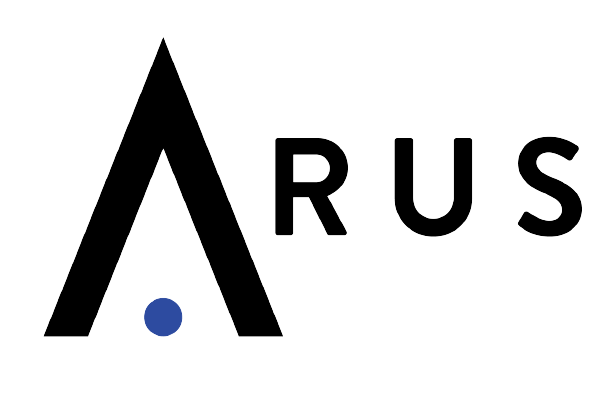

KAMALAKKANNAN R
TRAINEE SOFTWARE ENGINEER

OBJECTIVE
SKILLS
- Git & GitHub
- Version Control
- Python Programming
- Basic JavaScript
- Advanced JavaScript
- TypeScript
- HTML
- CSS
- Frontend Development using React and CSS
- Interpreting Web pages using Inspect Element and console logging
PROJECTS
1.E-COMMERCE WEBSITE
2.RESUME SCREENING USING TF-IDF
EDUCATION
INSTITUTION NAME : JCT College of Engineering and technology
YEAR : 2022
PERCENTAGE : 81.3%
INSTITUTION NAME : TAC Government Higher Secondary School
YEAR : 2018
Percentage : 69.1%
INSTITUTION NAME : TAC Government Higher Secondary School
YEAR : 2016
PERCENTAGE : 78.2%
INTERNSHIPS & WORKSHOPS
- Sysbreeze Technologies (MOBILE APPLICATION-FLUTTER)
DATE: MAR 27th - 16th APR,2021 - Safe Technologies (Web Development with core PHP)
DATE: FEB 22nd -23rd MAR,2021 - WORKSHOP: SNS College Of Technology (Data Analytics),Coimbatore, Tamil Nadu 641 035
DATE: SEP 27th 2020 - WORKSHOP: S Pantech(Python),Gandhipuram,Coimbatore-641 032
DATE: JUL 20th 2019
PERSONAL DETAILS
| FATHER’S NAME | Mr.RAJENDRAN.S |
| MARITAL STATUS | Single |
| GENDER | MALE |
| LANGUAGES KNOWN | Tamil, English. |
TRAINING PROJECTS
- 3 Bills Problem
- calculating who owes how much money to whom after the split payments
- Round Robin
- scheduling matches between teams in such a way that every team gets an opportunity to play with other teams, and no 2 teams face other again
- Version Control
- Calculating total number of published versions, along with highest contributing authors towards publishing of app updates, as well as sorting the publishing versions based on number of bugs the particular version has fixed
- Tennis Grand Slam Draw
- This project was intended to schedule matches between players based on ranking or rating of each player. So, using probability distribution and Math random function it has to be proved that the Player 8 has less than 9% chance to win against the Player 1
- Heads You Win
- This Project was intended to get the score based on tosses conducted by computer & player. The tosses carried out was in the interval of 1 second and total 4 rounds. Each round has 10 tosses. The output, who leads by how many heads was being consoled out every round.
AREA OF INTEREST
- CLOUD
- BLOCK CHAIN
- UI/UX
- Artificial Intelligence
MOB NO:6369880741
GMAIL:ikamalrajendran@gmail.com
FACEBOOK:ithekamal
ARUS INFO PRIVATE LIMITED
CIN-u74999KA2021PTC145132